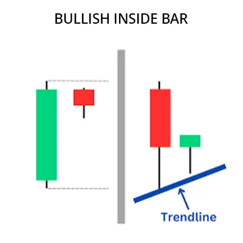

Bullish Inside Bar पैटर्न एक ट्रेडिंग पैटर्न है जो बाजार में निम्नदिशा में ट्रेंड की अनुपस्थिति को सूचित करता है और
ऊपरी दिशा में ट्रेंड की ओर इशारा करता है। इस पैटर्न का निर्माण दो कैंडलस्टिक्स द्वारा किया जाता है। पहली कैंडलस्टिक
एक निम्नदिशा कैंडलस्टिक होती है और दूसरी कैंडलस्टिक एक उपरी दिशा की कैंडलस्टिक होती है जो पहली कैंडलस्टिक
के शरीर को पूरी तरह से नहीं समेटती है और पहली कैंडलस्टिक की खुलने और बंद होने की कीमतों के बीच रहती है।